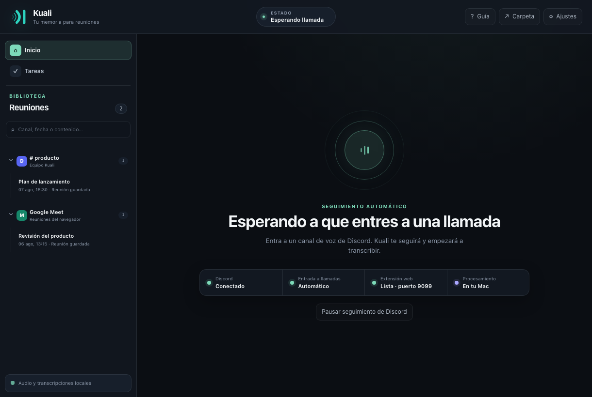

Transcripción en vivo por hablante
Mira cómo crece la transcripción durante la reunión. Cada intervención permanece asociada al participante expuesto por la plataforma.
Kuali escucha mientras hablan, transcribe en vivo a cada participante dentro de tu computadora y convierte el resultado en decisiones y tareas fáciles de buscar.

Kuali no es un bloque de texto que aparece al terminar. Mantiene conectados al hablante, el contexto, las decisiones y sus responsables desde la primera palabra.
Mira cómo crece la transcripción durante la reunión. Cada intervención permanece asociada al participante expuesto por la plataforma.
Busca una frase, canal, participante o fecha y vuelve directamente al contexto exacto.
Whisper transcribe. Silero evita que el teclado, los golpes y el ruido de fondo lleguen al decodificador.
Cuando lo activas, el LLM elegido extrae puntos clave, preguntas, decisiones y tareas por participante. Al apagarlo, ninguna transcripción se envía a un LLM.
Graba varias llamadas separadas sin mezclar participantes, tiempos ni transcripciones.
Permite que otras herramientas reciban eventos firmados con la reunión completa y sus resultados.
Configura el bot de Discord o carga la extensión incluida usando la guía paso a paso.
Kuali separa participantes, filtra el audio que no es voz y transcribe continuamente.
Busca en el texto completo o revisa decisiones, preguntas y tareas opcionales.
Transcripciones, reuniones, tareas, configuraciones y registros se guardan únicamente en tu computadora. Kuali no tiene una nube propia ni sincroniza esos datos por su cuenta.
El audio original no sale del equipo en ninguno de estos flujos.
Desde instalar Kuali hasta crear el bot de Discord y cargar la extensión, cada paso está escrito para alguien que lo hace por primera vez.
La versión actual tiene firma ad hoc y todavía no está notarizada por Apple. El segundo comando elimina explícitamente la cuarentena únicamente de Kuali.app.
$ brew install --cask igarrux/kuali/kuali $ xattr -dr com.apple.quarantine /Applications/Kuali.app
Revisa ambos comandos antes de ejecutarlos. Requiere macOS 11 o posterior en Apple Silicon.
No. Whisper y Silero procesan el audio en memoria dentro de tu computadora. Kuali no conserva una grabación ni la envía a un servicio operado por el proyecto.
Sí. Kuali conserva la identidad cuando Discord o el servicio de reuniones la expone. Si una fuente entrega audio mezclado, lo indica claramente en lugar de inventar una atribución.
No. La transcripción funciona localmente sin un LLM. Los resúmenes y tareas son opcionales y permanecen desactivados cuando apagas su interruptor.
En Discord, Kuali reproduce y publica el aviso de consentimiento al entrar, lo repite para quienes llegan después y conserva un registro cronológico.
Sí. La aplicación de escritorio es de código abierto bajo MIT. La extensión interoperable se distribuye bajo Apache-2.0.